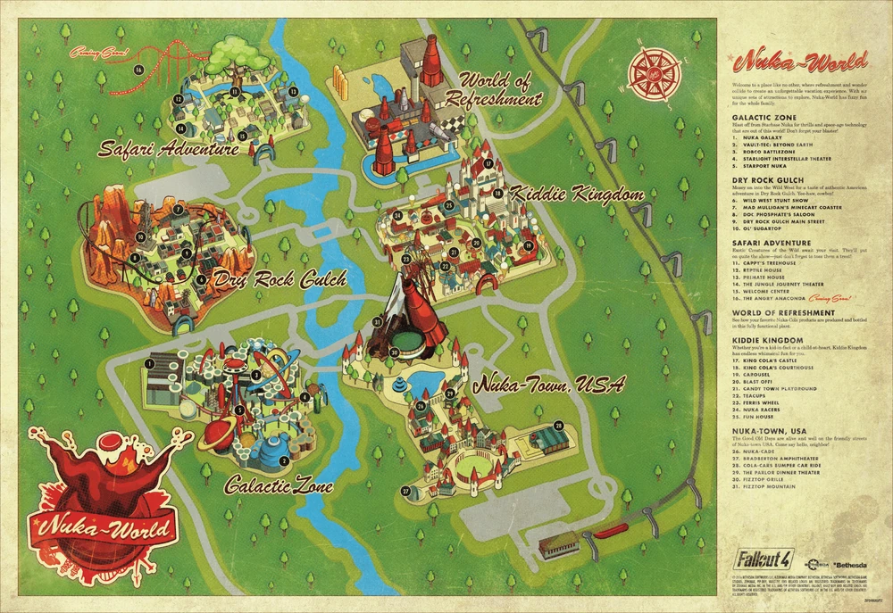

Nuka world
Property of the Nuka-Cola Corporation Nuka-World Information Terminal Welcome to Nuka-World! You are currently in Nuka-World's Nuka-Town U.S.A. Please make a selection below to access more information.
Nuka-Cola is the flagship product of the Nuka-Cola Corporation and one of the symbols of United States culture. Introduced in 2044, it rapidly dominated the soft drink market, eventually becoming the most popular soda on the market and a staple of American culture. Bottled and distributed nationwide, Nuka-Cola was available in such numbers that even two centuries after the Great War put a stop to all major bottling operations, large quantities of bottled Nuka-Cola can still be found across the wasteland. In the aftermath of the Great War, Nuka-Cola bottle caps became the de facto currency in most post-War societies.
